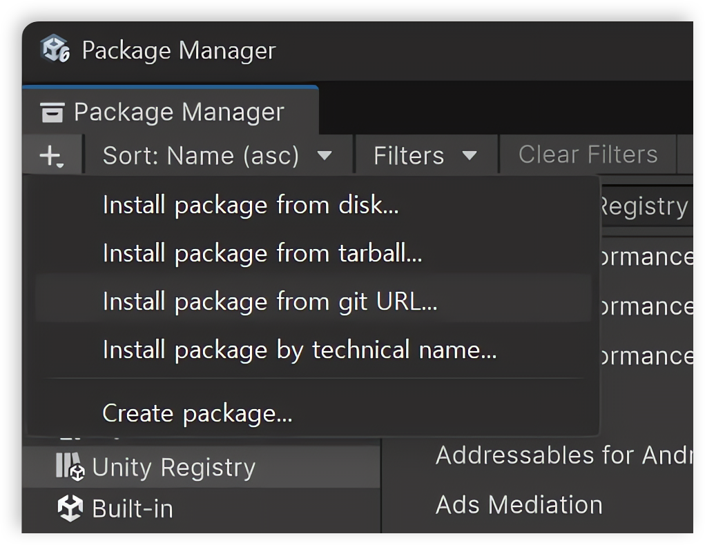

Installation
Install the package
Install UITK Effects through Unity Package Manager using the Git repository URL.
- Make sure Git is installed.
- Open the Package Manager.
- Click the + button and select Install package from git URL....
- Enter the package repository URL and click Install.
https://github.com/NK-Studio/com.nkstudio.uitk-effect.git
Install the filters and gradient material
The filter definitions and gradient material ship inside the package folder, so they don't appear in UI Builder's asset pickers until they are copied into your project's Assets folder.
The UITK Effects Setup window opens automatically the first time the package is imported into a project.
You can also open it manually from Window > NK Studio > UITK Effects Setup.

- Click Install UI Builder Assets.
- The definitions and material are copied to
Assets/UITK Effects, and each item's status changes to Installed.
Once installed, DropShadowFilter, InnerShadowFilter, OuterGlowFilter, OutlineFilter, and Gradient.mat are selectable from the Definition list in UI Builder's Filter inspector, as used in Getting Started.
Note
If Show at startup is unchecked, the window won't reopen automatically on later sessions — reopen it from the Window menu whenever new assets are missing.